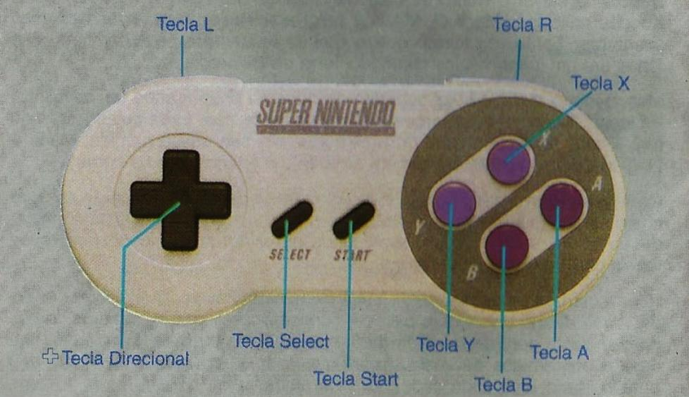
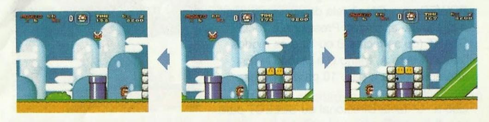
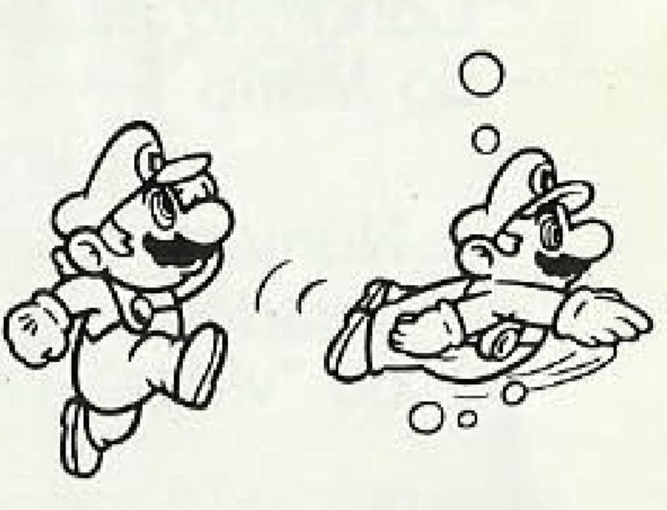
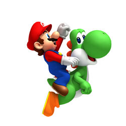

Você pode usar qualquer um dos controllers Super NES.

+Tecla Direcional
Tela "mapa"
Movimenta o Mario na tela do mapa.
Depois de pressionar START na tela do mapa, você pode percorrer o mapa.
Movimenta o cursor.
Movimenta o Mario.
Tecla Start
Inicia o jogo.
Interrompe o jogo.
Aparecem as opções na tela de seleção.
Tecla Select
Muda as opções na tela de seleção.
Derruba o item reserva da caixa localizada na parte superior da tela.
Tecla L Tecla R
Quando você está numa cena de ação, as teclas L e R podem ser usadas para avançar ou voltar
ligeiramente a uma cena. Você pode usá-las para ver mais adiante ou o que já passou, caso necessário.
Essa função Não funciona em todas as áreas.

Tecla A
Faz o Mario saltar girando.
Faz o Mario pular das costas do Yoshi.

Tecla B
Faz o Mario saltar.(Mario e Yoshi saltam juntos quando o Mario está nas costas do Yoshi).
Faz o Mario com Capa aterrisar devagar.
Faz o Mario nadar.
Aparecem as opções na tela de seleção.
Faz o Yoshi voar quando é pressionada seguidamente, (Quando o Yoshi tem o poder de voar).

Teclas X e Y
Faz o Mario acelerar.
O Mario pode segurar alguns objetos quando essa tecla é mantida pressionada.
Faz o Mario socar objetos do outro lado da cerca de arame enquanto estiver encostado nela.
Depois que o Mario com Capa correr bastante e saltar, ele pode voar.
Faz o Yoshi comer inimigos quando é pressionada, deixa ele cuspir os indesejáveis quando ela é solta.